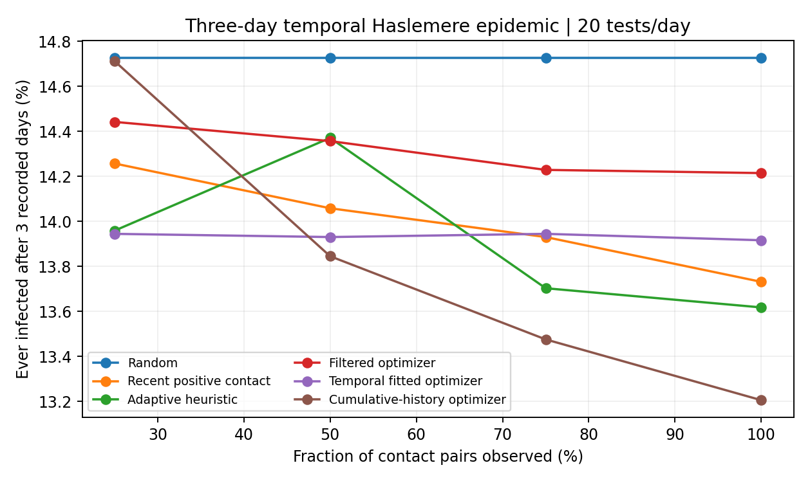

Two complementary network questions
SBM: structural variation
A static network generates 50-day epidemics. Six community-strength ratios and five missing-edge levels test whether network structure alters the value of fitted-risk screening. Thirty paired replications per condition.
Haslemere: temporal contacts
The measured graph changes every five minutes over three recorded days. We compare using recent contact weights with past cumulative weights in testing allocation. Transmission uses the actual sequence.
Three-day Haslemere results
These are outcomes of simulated infections on actual measured contacts, not observed COVID-19 cases. The total ever infected includes four people already confirmed at the start and 25 hidden initial infections.
| Policy | Ever infected, complete observation | New infections in three days |
|---|---|---|
| No testing | 15.52% | 43.8 |
| Random | 14.73% | 40.1 |
| Observed recent degree | 14.64% | 39.7 |
| Recent confirmed contacts | 13.73% | 35.4 |
| Original adaptive heuristic | 13.62% | 34.9 |
| Mean-field optimizer | 14.21% | 37.7 |
| Fitted temporal optimizer | 13.92% | 36.3 |
| Fitted cumulative-history optimizer | 13.21% | 32.9 |
The temporal fitted optimizer (13.92%) does not beat the causal cumulative-history optimizer (13.21%) on average. Their paired difference is +0.71 percentage points (95% Monte Carlo interval -0.11 to +1.53). A richer time series is not automatically a better short-horizon testing signal.


Inference and optimization
The state estimator is a factorized Bayesian filter over S/H/C/R disease states updated every five-minute slot. A logistic individual infection-risk model is fitted using 60 independent simulated temporal epidemics, with 16 held-out epidemics. Held-out Brier score is 0.0670; AUC is 0.618. A one-block additive expected-prevention objective selects five eligible people each round. The filter-only optimizer, the fitted optimizer, and the earlier adaptive heuristic remain distinct policies.
Limits
Only 7am–11pm contacts were recorded: we advance diagnosis and recovery overnight but do not model transmission on unobserved nighttime contacts. Epidemic parameters, initial infections, and testing responses are assumptions. Prior observed contacts inform decisions; no policy uses contacts from future recorded time slots. The cumulative-history baseline also uses only the observed prefix, not all three days in advance.